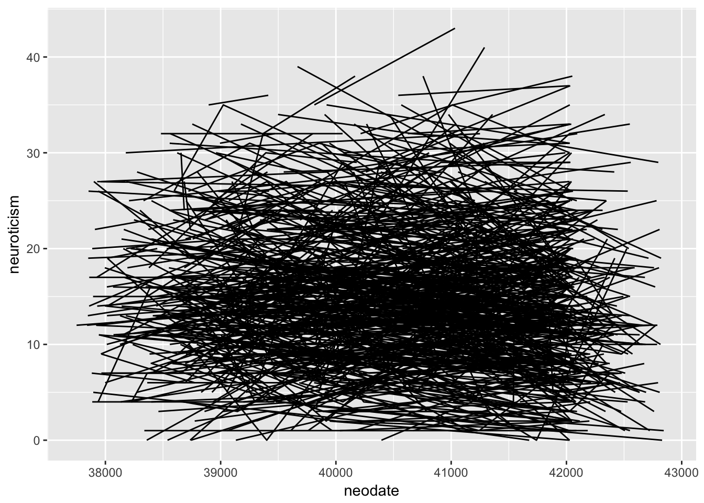
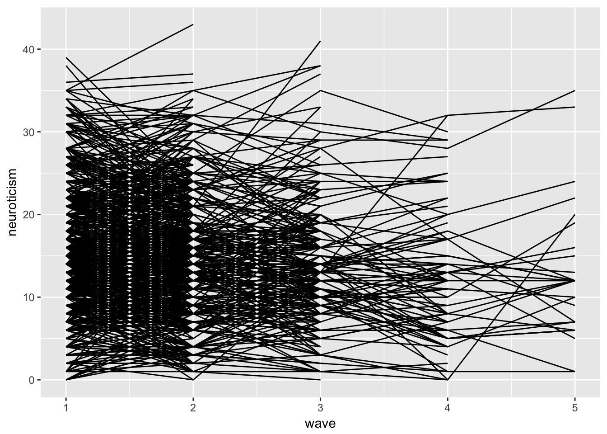
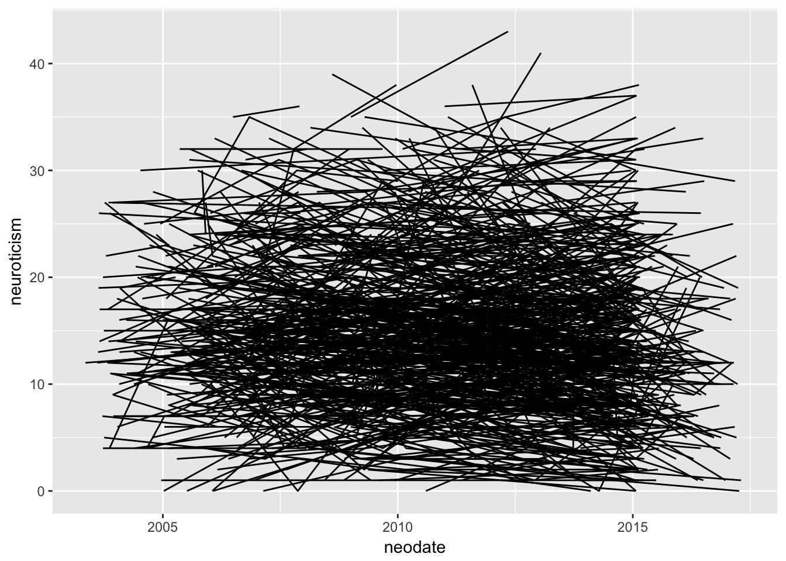
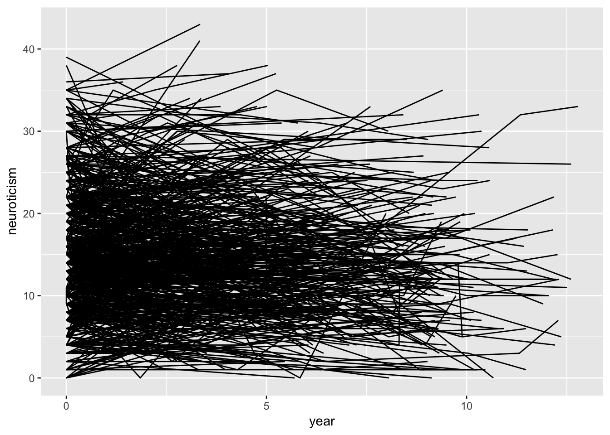
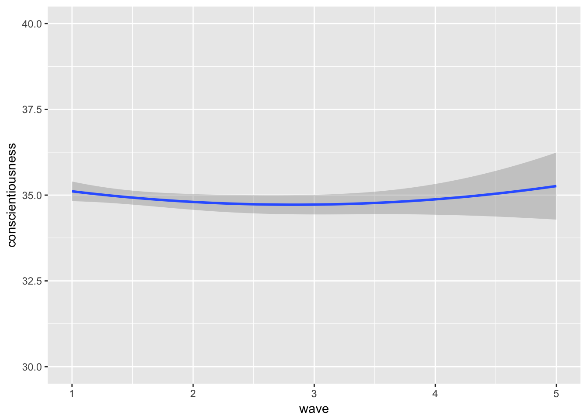

Chapter 5 Polynomial and Splines
5.1 Polynomaials
level 1: \[ {Y}_{ij} = \beta_{0j} + \beta_{1j}(Time_{ij} - \bar{X)} + \beta_{2j}(Time_{ij} - \bar{X)}^2 + \varepsilon_{ij} \]
Level 2: \[ {\beta}_{0j} = \gamma_{00} + U_{0j}\]
\[ {\beta}_{1j} = \gamma_{10} + U_{1j} \] \[ {\beta}_{2j} = \gamma_{20} + U_{2j} \]
5.2 polynomial example
rm(list = ls())
library(readr)
cdrs <- read_csv("~/Box Sync/5165 Applied Longitudinal Data Analysis/Longitudinal/cdrs.csv")## Parsed with column specification:
## cols(
## mapid = col_integer(),
## exclude = col_character(),
## cdr = col_double(),
## testdate = col_integer()
## )personality <- read_csv("~/Box Sync/5165 Applied Longitudinal Data Analysis/Longitudinal/Subject_personality.csv")## Parsed with column specification:
## cols(
## mapid = col_integer(),
## age = col_integer(),
## neodate = col_integer(),
## neuroticism = col_integer(),
## extraversion = col_integer(),
## openness = col_integer(),
## agreeablness = col_integer(),
## conscientiousness = col_integer(),
## gender = col_character()
## )library(ggplot2)
gg1 <- ggplot(personality,
aes(x = neodate, y = neuroticism, group = mapid)) + geom_line()
gg1## Warning: Removed 1 rows containing missing values (geom_path).
library(tidyverse)
personality<- personality %>%
group_by(mapid) %>%
arrange(neodate) %>%
mutate(wave = seq_len(n())) gg2 <- ggplot(personality,
aes(x = wave, y = neuroticism, group = mapid)) + geom_line()
gg2
personality$neodate <- as.Date(personality$neodate, origin = "1900-01-01")## Warning in strptime(xx, f <- "%Y-%m-%d", tz = "GMT"): unknown timezone
## 'zone/tz/2017c.1.0/zoneinfo/America/Chicago'gg3 <- ggplot(personality,
aes(x = neodate, y = neuroticism, group = mapid)) + geom_line()
gg3## Warning: Removed 1 rows containing missing values (geom_path).
## convert to days from first assessment
personality.wide <- personality %>%
dplyr::select(mapid, wave, neodate) %>%
spread(wave, neodate)
personality.wide$wave_1 <- personality.wide$'1'
personality.wide$wave_2 <- personality.wide$'2'
personality.wide$wave_3 <- personality.wide$'3'
personality.wide$wave_4 <- personality.wide$'4'
personality.wide$wave_5 <- personality.wide$'5'
personality.wide <- personality.wide %>%
mutate (w_1 = (wave_1 - wave_1)/365,
w_2 = (wave_2 - wave_1)/365,
w_3 = (wave_3 - wave_1)/365,
w_4 = (wave_4 - wave_1)/365,
w_5 = (wave_5 - wave_1)/365)
personality.long <- personality.wide %>%
dplyr::select(mapid, w_1:w_5) %>%
gather(wave, year, -mapid) %>%
separate(wave, c('weeks', 'wave' ), sep="_") %>%
dplyr::select(-weeks)
personality.long$wave <- as.numeric(personality.long$wave)
personality <- personality %>%
left_join(personality.long, by = c('mapid', 'wave' )) gg4 <- ggplot(personality,
aes(x = year, y = neuroticism, group = mapid)) + geom_line()
gg4## Don't know how to automatically pick scale for object of type difftime. Defaulting to continuous.## Warning: Removed 1 rows containing missing values (geom_path).
library(lme4)
p1 <- lmer(neuroticism ~ year + (1 | mapid), data=personality)
summary(p1)## Linear mixed model fit by REML ['lmerMod']
## Formula: neuroticism ~ year + (1 | mapid)
## Data: personality
##
## REML criterion at convergence: 13657.4
##
## Scaled residuals:
## Min 1Q Median 3Q Max
## -2.7877 -0.4675 -0.0227 0.4289 3.3166
##
## Random effects:
## Groups Name Variance Std.Dev.
## mapid (Intercept) 42.16 6.493
## Residual 15.65 3.956
## Number of obs: 2105, groups: mapid, 1090
##
## Fixed effects:
## Estimate Std. Error t value
## (Intercept) 16.05632 0.22577 71.12
## year -0.13204 0.03247 -4.07
##
## Correlation of Fixed Effects:
## (Intr)
## year -0.247library(lme4)
personality.s <- personality %>%
group_by(mapid) %>%
tally() %>%
filter(n >=2)
personality <- personality %>%
filter(mapid %in% personality.s$mapid)
p2 <- lmer(neuroticism ~ year + (1 | mapid), data=personality)
summary(p2)## Linear mixed model fit by REML ['lmerMod']
## Formula: neuroticism ~ year + (1 | mapid)
## Data: personality
##
## REML criterion at convergence: 10396.9
##
## Scaled residuals:
## Min 1Q Median 3Q Max
## -2.7542 -0.5122 -0.0282 0.4698 3.3369
##
## Random effects:
## Groups Name Variance Std.Dev.
## mapid (Intercept) 40.92 6.397
## Residual 15.61 3.950
## Number of obs: 1635, groups: mapid, 620
##
## Fixed effects:
## Estimate Std. Error t value
## (Intercept) 15.3797 0.2915 52.76
## year -0.1083 0.0331 -3.27
##
## Correlation of Fixed Effects:
## (Intr)
## year -0.320p3 <- lmer(neuroticism ~ year + (year | mapid), data=personality)
summary(p3)## Linear mixed model fit by REML ['lmerMod']
## Formula: neuroticism ~ year + (year | mapid)
## Data: personality
##
## REML criterion at convergence: 10389.2
##
## Scaled residuals:
## Min 1Q Median 3Q Max
## -2.7438 -0.4825 -0.0305 0.4443 3.3453
##
## Random effects:
## Groups Name Variance Std.Dev. Corr
## mapid (Intercept) 41.68558 6.4564
## year 0.09824 0.3134 -0.10
## Residual 14.25791 3.7760
## Number of obs: 1635, groups: mapid, 620
##
## Fixed effects:
## Estimate Std. Error t value
## (Intercept) 15.37238 0.29135 52.76
## year -0.10272 0.03602 -2.85
##
## Correlation of Fixed Effects:
## (Intr)
## year -0.3175.2.1 importance of centering
personality$year <- as.numeric(personality$year)
p4 <- lmer(neuroticism ~ year + I(year^2) + (year | mapid), data=personality)
summary(p4)## Linear mixed model fit by REML ['lmerMod']
## Formula: neuroticism ~ year + I(year^2) + (year | mapid)
## Data: personality
##
## REML criterion at convergence: 10395.8
##
## Scaled residuals:
## Min 1Q Median 3Q Max
## -2.7663 -0.4836 -0.0251 0.4422 3.3258
##
## Random effects:
## Groups Name Variance Std.Dev. Corr
## mapid (Intercept) 41.72924 6.4598
## year 0.09815 0.3133 -0.10
## Residual 14.26217 3.7765
## Number of obs: 1635, groups: mapid, 620
##
## Fixed effects:
## Estimate Std. Error t value
## (Intercept) 15.324317 0.297094 51.58
## year -0.031791 0.092091 -0.35
## I(year^2) -0.008789 0.010490 -0.84
##
## Correlation of Fixed Effects:
## (Intr) year
## year -0.300
## I(year^2) 0.194 -0.920# woah, how do I interpret this? WHy all of a sudden non-sig?
# what would happen if I changed my time metric? library(psych)##
## Attaching package: 'psych'## The following object is masked from 'package:merTools':
##
## ICC## The following objects are masked from 'package:arm':
##
## logit, rescale, sim## The following objects are masked from 'package:ggplot2':
##
## %+%, alphadescribe(personality$year)## vars n mean sd median trimmed mad min max range skew kurtosis
## X1 1 1635 3.1 3.29 2.45 2.66 3.63 0 12.78 12.78 0.8 -0.41
## se
## X1 0.08personality$year.c <- personality$year - 3.1
p5 <- lmer(neuroticism ~ year.c + I(year.c^2) + (year.c | mapid), data=personality)
summary(p5)## Linear mixed model fit by REML ['lmerMod']
## Formula: neuroticism ~ year.c + I(year.c^2) + (year.c | mapid)
## Data: personality
##
## REML criterion at convergence: 10395.8
##
## Scaled residuals:
## Min 1Q Median 3Q Max
## -2.7663 -0.4836 -0.0251 0.4422 3.3258
##
## Random effects:
## Groups Name Variance Std.Dev. Corr
## mapid (Intercept) 41.43047 6.4367
## year.c 0.09815 0.3133 0.05
## Residual 14.26218 3.7765
## Number of obs: 1635, groups: mapid, 620
##
## Fixed effects:
## Estimate Std. Error t value
## (Intercept) 15.141299 0.296073 51.14
## year.c -0.086285 0.041061 -2.10
## I(year.c^2) -0.008789 0.010490 -0.84
##
## Correlation of Fixed Effects:
## (Intr) year.c
## year.c 0.226
## I(year.c^2) -0.353 -0.4805.2.2 random terms
fitting a random slope plus a random quadratic leads to difficulties ie non-congergence. What does this model say?
p6 <- lmer(neuroticism ~ year + I(year^2) + ( I(year^2) | mapid), data=personality)## Warning in checkConv(attr(opt, "derivs"), opt$par, ctrl = control$checkConv, : Model is nearly unidentifiable: very large eigenvalue
## - Rescale variables?summary(p6)## Linear mixed model fit by REML ['lmerMod']
## Formula: neuroticism ~ year + I(year^2) + (I(year^2) | mapid)
## Data: personality
##
## REML criterion at convergence: 10398.9
##
## Scaled residuals:
## Min 1Q Median 3Q Max
## -2.7737 -0.4938 -0.0201 0.4526 3.3479
##
## Random effects:
## Groups Name Variance Std.Dev. Corr
## mapid (Intercept) 4.078e+01 6.38610
## I(year^2) 4.854e-04 0.02203 0.02
## Residual 1.506e+01 3.88052
## Number of obs: 1635, groups: mapid, 620
##
## Fixed effects:
## Estimate Std. Error t value
## (Intercept) 15.321512 0.296443 51.68
## year -0.026969 0.093406 -0.29
## I(year^2) -0.009489 0.010731 -0.88
##
## Correlation of Fixed Effects:
## (Intr) year
## year -0.300
## I(year^2) 0.202 -0.928
## convergence code: 0
## Model is nearly unidentifiable: very large eigenvalue
## - Rescale variables?5.3 Splines aka piecewise
Fit more than 1 trajectory. Best to use when we have a reason for a qualitative difference at some identified time point. For example, before your health event you may have a different trajectory than after it and thus you would want to model two seperate trajectories. Splines allow you to do this in a single model. You can do this in simple regression and the logic follows for growth models.
We simply replace time with dummy variables that represent different segments we wish to model. The point of separation is called a knot. You can have as many as you want and these can be pre-specified (usually for our case) or in more advanced treatments have the data specify it for you.
5.3.1 seperate curves
The most common is to create different trajectories that change across knots. The easiest example is to take your time variable and transform it into a Time1 and time2, that represent the different time periods. This is easiest to see if we choose our wave variable as our time metric, though you do not have to necessarily do it this way.
t1 <- tribble(
~time, ~t0, ~t1,~t2,~t3,~t4,~t5,
"time 1", 0, 1,2,2,2,2,
"time 2", 0, 0,0,1,2,3
)
t1## # A tibble: 2 x 7
## time t0 t1 t2 t3 t4 t5
## <chr> <dbl> <dbl> <dbl> <dbl> <dbl> <dbl>
## 1 time 1 0 1 2 2 2 2
## 2 time 2 0 0 0 1 2 3The idea is that once you hit the knot your value stays the same. Same logic for the second knot, until you get to that knot you dont have a trajectory.
5.3.2 incremental curves
This can be contrasted with a different type of coding, called incremental. Here the first trajectory keeps going, whereas the second trajectory starts at the position of the knot.
t2 <- tribble(
~time, ~t0, ~t1,~t2,~t3,~t4,~t5,
"time 1", 0, 1,2,3,4,5,
"time 2", 0, 0,0,1,2,3
)
t2## # A tibble: 2 x 7
## time t0 t1 t2 t3 t4 t5
## <chr> <dbl> <dbl> <dbl> <dbl> <dbl> <dbl>
## 1 time 1 0 1 2 3 4 5
## 2 time 2 0 0 0 1 2 3The two coding schemes propose the same type of trajectoy, the only thing that differes is the interpretation of the coefficients.
In the first, the two slope coefficients represent the actual slope in the respective time period.
In the second, the coefficient for time 2 represents the deviation from the slope in period 1. The positive of this second method is you can easily test whether these two slopes are different from one another.
level 1:
\[ {Y}_{ij} = \beta_{0j} + \beta_{1j}Time1_{ij} + \beta_{2j}Time2_{ij} + \varepsilon_{ij} \]
Level 2: \[ {\beta}_{0j} = \gamma_{00} + U_{0j} \]
\[ {\beta}_{1j} = \gamma_{10} + U_{1j} \] \[ {\beta}_{2j} = \gamma_{20} + U_{2j} \]
5.3.3 splines example
personality$time1 <- recode(personality$wave, '1' = 0 , '2' = 1, '3' = 1, '4' = 1,'5' = 1)
personality$time2 <- recode(personality$wave, '1' = 0 , '2' = 0, '3' = 1, '4' = 2,'5' = 3) p7 <- lmer(conscientiousness ~ time1 + time2 + (time1 | mapid) , data=personality)
summary(p7)## Linear mixed model fit by REML ['lmerMod']
## Formula: conscientiousness ~ time1 + time2 + (time1 | mapid)
## Data: personality
##
## REML criterion at convergence: 10003.8
##
## Scaled residuals:
## Min 1Q Median 3Q Max
## -5.2557 -0.4068 0.0272 0.4304 4.5853
##
## Random effects:
## Groups Name Variance Std.Dev. Corr
## mapid (Intercept) 32.98 5.743
## time1 4.73 2.175 -0.13
## Residual 10.70 3.271
## Number of obs: 1635, groups: mapid, 620
##
## Fixed effects:
## Estimate Std. Error t value
## (Intercept) 34.1871 0.2654 128.80
## time1 -0.5365 0.2018 -2.66
## time2 0.2184 0.1561 1.40
##
## Correlation of Fixed Effects:
## (Intr) time1
## time1 -0.370
## time2 0.000 -0.301gg5 <- ggplot(personality, aes(x = wave, y = conscientiousness, group = mapid)) + stat_smooth(method = 'lm', formula = y ~ poly(x,2, raw = TRUE),data = personality, aes(x = wave, y = conscientiousness, group=1)) + scale_y_continuous(limits = c(30, 40))
gg5## Warning: Removed 609 rows containing non-finite values (stat_smooth).
5.4 splines + polynomail = polynomial piecewise
\[ {Y}_{ij} = \beta_{0j} + \beta_{1j}Time1_{ij} + \beta_{2j}Time1_{ij}^2 + \beta_{3j}Time2_{ij} + \varepsilon_{ij} \]
Level 2: \[ {\beta}_{0j} = \gamma_{00} + U_{0j} \]
\[ {\beta}_{1j} = \gamma_{10} + U_{1j} \] \[ {\beta}_{2j} = \gamma_{20} + U_{2j} \] \[ {\beta}_{3j} = \gamma_{30} + U_{3j}\]